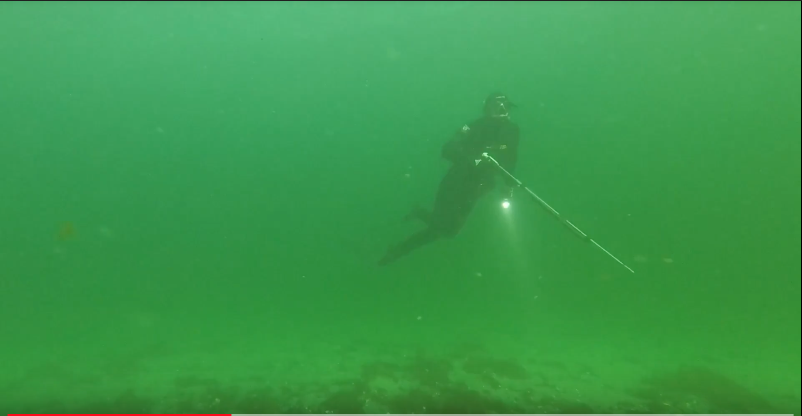

Jeg vil aldrig anbefale at man tager alene ud i vandet da der kan ske mange uventet ting. Man skal altid være minimum to afsted af gangen, men gerne flere. Hvis du ikke lige har en god ven du kan tage med i vandet findes der gode muligheder for at finde en eller flere som gerne vil med. Du kan enten melde dig ind i diverse grupper på Facebook som har ”afdelinger” rundt om i landet. Der er følgende jeg kan anbefale
Ellers kan du også melde dig ind i diverse dykkerklubber rundt om i landet, som oftest også har en afdeling med UV Jagt. I Århus er der UV Jagt Kluben Nemo som er en af Danmarks største undervandsjagtklubber. De har et velfungerende forum hvor mange jægere fra Århus området deler ud af viden og historier. Der bliver årligt afholdt træf og ture til udlande som du kan læse meget mere om her inde I Odense ligger UV Jagt Kluben Aqua Club Der er et nyt klubhus er på vej og er snart færdig. Dette er en aktiv undervandsjagtklubmed en del erfarne undervandsjægere. Desuden stor juniorafdeling hvor man som barn og ung kan melde sig ind hvis man vil ind i et lidt yngre miljø
